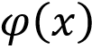
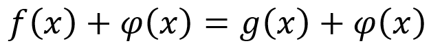
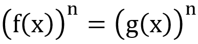

Deňlemeler we deňsizlikler
Kesgitleme. Eger-de üýtgeýän х ululygyň haýsy bahalarynda f(х) = g(х) deňligiň dogry san deňligine öwrüljekligini kesgitlemek talap edilýän bolsa, onda f(х) = g(х) deňlige bir näbellili deňleme diýilýär.
Üýtgeýän ululygyň berlen deňlemäni dogry f(х0) = g(х0) san deňligine öwürýän ähli bahalaryna deňlemäniň çözüwi (köki) diýilýär. Deňlemäniň bar bolan ähli köklerini tapmaklyga ýa-da onuň çözüwiniň ýokdugyny görkezmeklige deňlemäni çözmek diýilýär.
Deňlemeleriň deňgüýçliligi barada teoremalar
1-nji teorema: Eger f(х) = g(х) deňlemäniň iki bölegine hem onuň kesgitleniş ýaýlasynda kesgitli bolan  aňlatmany goşsak, onda berlen deňlemä deňgüýçli bolan
deňleme alnar.
2-nji teorema: Eger f(х) = g(х) deňlemäniň iki bölegini hem onuň kesgitleniş ýaýlasynda kesgitli bolan noldan tapawutly şol bir aňlatma köpeltsek, onda berlen deňlemä deňgüýçli bolan
deňleme alnar.
3-nji teorema: Eger х-yň f(х) = g(х) deňlemäniň kesgitleniş ýaýlasyna degişli ähli bahalarynda f(x) g(x) ≥ 0 bolsa,onda f(х) = g(х) deňlemäniň iki bölegini hem şol bir natural n derejä götersek, berlen deňlemä deňgüýçli bolan
deňleme alnar.
Deňsizlikler.
Üýtgeýän ululygyň berlen deňsizligi dogry san deňsizligine öwürýän ähli bahalaryna deňsizligiň çözüwi diýilýär.Deňsizligi çözmek diýip – onuň bar bolan ähli çözüwlerini tapmaklyga ýa-da çözüwiniň ýokdugyny subut etmeklige aýdylýar. Çözüwleriniň köplükleri gabat gelýän deňsizliklere deňgüýçli deňsizlikler diýilýär.